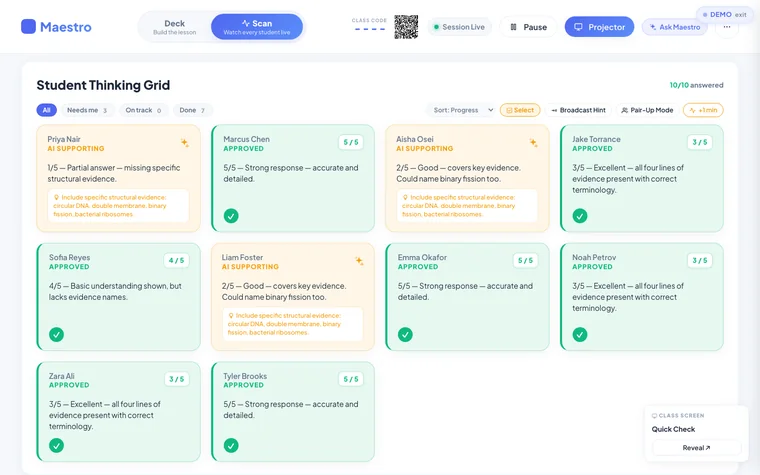
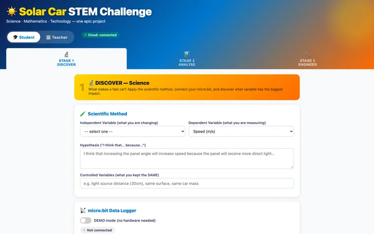

01 / Classroom software
Class Studio and Aissess
Purpose-built assessment software: the teacher controls access, students' work carries across lessons, and AI marks reach students only after the teacher approves them.
ICT Educator of the Year 2026 ICT Educators NSW
I’m Dimitrios Stivaktas, a Science and STEM teacher in Sydney. I design tools and teaching resources around problems in my own lessons, and build them with AI.
The software is my independent work, outside school roles. Live demos use made-up data and sample AI responses.

Selected work
A closer look at assessment, live lessons and teaching resources. Each project explains the learning purpose, the role of AI and the teacher’s decisions.
01 / Classroom software
Purpose-built assessment software: the teacher controls access, students' work carries across lessons, and AI marks reach students only after the teacher approves them.

02 / Classroom software
Live lessons where every student answers on their own device and the teacher sees the whole class's thinking at once.
03 / Teaching resources
Teaching resources I create with AI for my own Year 7 class: documentary-style slides, project lessons, worksheets and interactive activities.
More to explore
Robotics, STEM design, practice, feedback and the everyday running of a classroom.

A robot-car coding course for Years 7 and 8, with an AI helper that gives hints rather than answers.

Students design a water rocket, predict how it will fly, then compare the prediction with the real launch.

Runs a school's fleet of 3D printers: students submit, teachers approve, and the printers stay busy.

Year 11 Engineering Studies practice papers with instant marking and AI feedback on written answers.

A Year 11 Physics check that shows exactly which syllabus outcomes a student hasn't mastered yet.

Unlimited Year 11 Physics practice questions at the level a student needs, each with a worked solution.

Year 9 students design an electric drag racer on screen, predict its race time, then build and race the real car.

A Year 7 project that joins Science, Maths and Technology around a model solar car that logs its own data.
My approach
Each tool began with something in my own teaching, such as students guessing to hide what they don't know, or one teacher trying to give thirty students feedback in a single lesson.
The tutor asks questions rather than handing over answers, and assessments ask each student to explain their own work.
AI suggests marks and feedback; the teacher approves, changes or holds them back, and decides when tasks open, pause and lock.
I design each tool and test it against what students need; AI coding assistants help me build it. That lets a classroom teacher go from an idea to a working tool quickly.
Designed and built independently, outside my school roles. Demonstrations use made-up data and sample AI responses. The Year 7 Science resources were created with AI for my own classes and are shown as screenshots only.